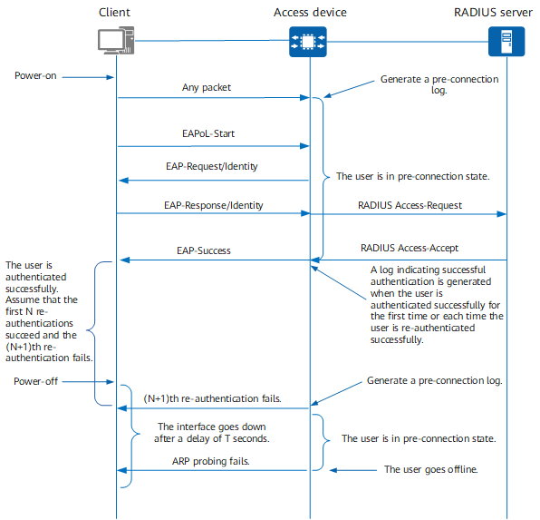
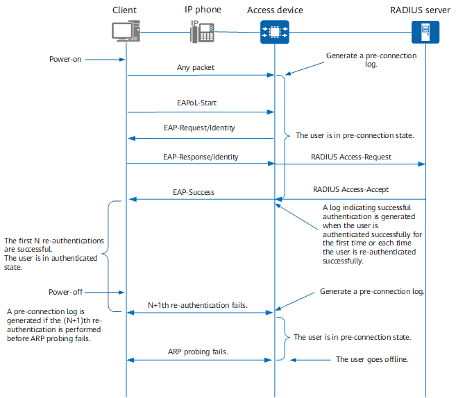

Pre-connection State
The pre-connection function enables users to enter the pre-connection state before they are authenticated successfully or after they fail authentication. You can configure pre-connection authorization for users in pre-connection state so that they have certain network access rights. If pre-connection authorization is not configured, these users do not have any access rights.
A pre-connection is triggered in either of the following situations:
- After startup, a client sends a packet to an access device and enters the pre-connection state.
- A client enters the pre-connection state after it fails the authentication.
The following assumes that the access device has no entries for a user before the user accesses the network. The access device deletes an existing user entry when detecting that the corresponding user goes offline or the physical link is down for more than T seconds (user logout delay) through ARP probing. If the access device has a user entry that has not been aged out for the user during user access, the access device does not generate a pre-connection log. If a user fails the first authentication, the user remains in the pre-connection state until going offline. The following describes the pre-connection mechanism upon a re-authentication failure.
When the client is directly connected to the access device, the interfaces on both ends will go down if the client is powered off. When the client is connected to the access device through an IP phone, the interface of the access device is connected to the IP phone; therefore, this interface will not go down if the client is powered off. In the two scenarios, the output of pre-connection logs is different. The following describes the two scenarios, assuming that when the interface link is faulty, the user logout delay is T seconds, and the user ARP probing ends within T seconds.
A Client Is Directly Connected to an Access Device
Figure 1 A client is directly connected to an access device
- The client sends a packet to the access device to establish a pre-connection, after which a pre-connection log is generated.
- The client initiates 802.1X authentication. If the authentication is successful, an authentication success log is generated.
- After the client is successfully authenticated, it is periodically re-authenticated. Each time the re-authentication is successful (N times, for example), an authentication success log is generated.
- After the client is powered off, its interface goes down, and the interface that connects the access device to the client goes down after a delay of T seconds.
- If the user is re-authenticated for the (N+1)th time within T seconds, the user fails the authentication, and a pre-connection log is generated.
- When the interface on the access device goes down after a delay of T seconds, the user will no longer be re-authenticated.
- After ARP probing initiated by the access device fails, the device logs out the client.
A Client Is Indirectly Connected to an Access Device
Figure 2 A client is indirectly connected to an access device
- The client sends a packet to the access device to establish a pre-connection, after which a pre-connection log is generated.
- The client initiates 802.1X authentication. If the authentication is successful, an authentication success log is generated.
- After the client is successfully authenticated, it is periodically re-authenticated. Each time the re-authentication is successful (N times, for example), an authentication success log is generated.
- After the client is powered off, the interface on the access device sends packets normally to the client because the client is still connected to the IP phone.
- The user will be re-authenticated for the (N+1)th time before ARP probing fails. In this case, the user fails the authentication, and a pre-connection log is generated.
- If ARP probing fails, the device logs out the client and does not perform (N+1)th re-authentication.
- After ARP probing initiated by the access device fails, the device logs out the client.